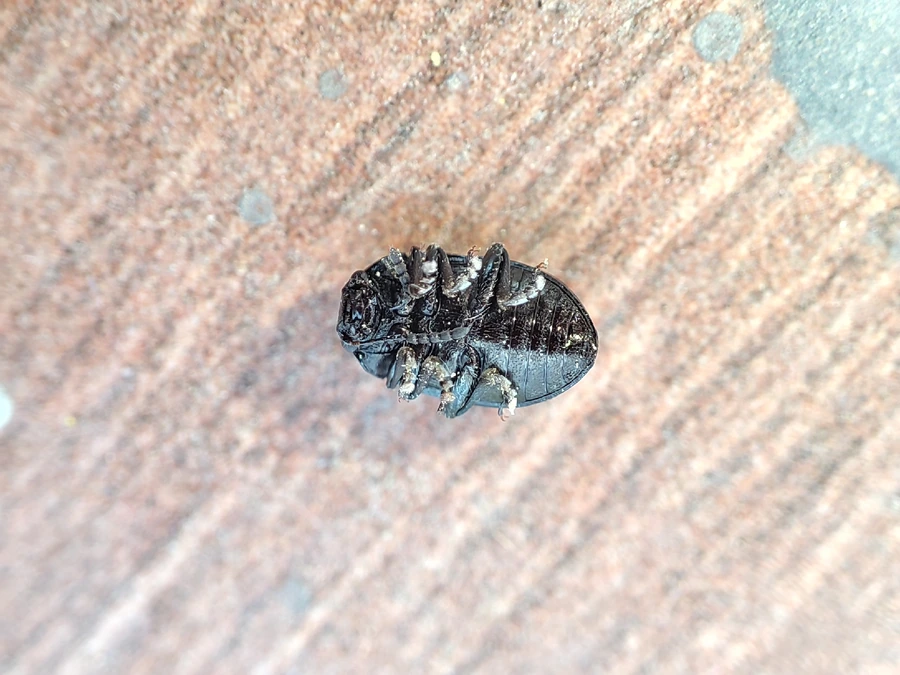

昆虫 · 动物界
大猿叶甲 Colaphellus bowringi

体蓝黑带金属光泽的小型叶甲，成虫与幼虫都啃食白菜、萝卜等十字花科蔬菜，受惊时会缩腿假死跌落地面。
- 分类
- 门节肢动物门纲昆虫纲目鞘翅目科叶甲科属猿叶甲属
- 栖息环境
- 白菜、萝卜、芥菜、油菜等十字花科蔬菜田及附近杂草丛
- 地理分布
- 中国南北各地，以及朝鲜半岛和日本
- 保护级别
- 尚无保护级别；为十字花科蔬菜常见害虫
物种志
大猿叶甲的体长约四至五毫米，体形椭圆而背面隆起，体色蓝黑至深蓝，带明显的金属光泽，鞘翅表面密布整齐的刻点，刻点排成纵列，前胸背板宽阔，前缘略凹，两侧有细边。它的触角短，约为体长的三分之一，足短而结实。幼虫体呈灰黑色，体表有多条横皱纹，形状略像一截小毛虫，爬行时拱起背部。
它分布于中国南北各地，以及朝鲜半岛和日本，栖息在白菜、萝卜、芥菜、油菜等十字花科蔬菜田及附近的杂草丛，成虫白天活动，取食叶片，受惊时假死跌落地面，幼虫也在叶背和叶心啃食，造成孔洞和缺刻。它一年发生两代，以成虫在土中或枯叶下越冬，春季出土后取食并产卵。它是十字花科蔬菜上的常见害虫，尚无保护级别，防治以清洁田园、轮作和药剂为主。
形态与习性
- 体长约四至五毫米，椭圆隆起
- 体色蓝黑至深蓝，带金属光泽
- 鞘翅密布整齐刻点，排成纵列
- 食性成虫与幼虫都啃食十字花科蔬菜叶片
- 习性受惊时假死跌落地面
- 发生世代一年两代，以成虫在土中越冬
趣味知识
- 它背上的刻点排得像算子，一只小甲虫也长得很讲究。
- 碰到危险就缩腿掉在地上装死，过一会儿再爬起来。
- 幼虫和成虫一起吃菜叶，叶心常被啃得只剩几根粗脉。